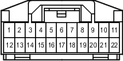

Код детали
C49
Каталожный номер
90980-11915
Цвет
Синий
Технические характеристики
Жгуты проводов для ремонта

Система
Аудиосистема (для моделей с системой навигации)
Фонари заднего хода
Щиток приборов (для моделей с левосторонним рулевым управлением)
Система круиз-контроля (для моделей с 1GR-FE)
Система круиз-контроля (для моделей с 1KD-FTV)
Динамическая радарная система круиз-контроля (для моделей с 1GR-FE)
Динамическая радарная система круиз-контроля (для моделей с 1KD-FTV)
Индикатор ECT и A/T (для моделей с 1GR-FE)
Индикатор ECT и A/T (для моделей с 1KD-FTV)
Индикатор ECT и A/T (для моделей с 2TR-FE)
Система управления двигателем (для моделей с 1GR-FE)
Система управления двигателем (для моделей с 1KD-FTV)
Система управления двигателем (для моделей с 2TR-FE)
Иммобилайзер двигателя (для моделей с системой посадки и запуска)
Система посадки и запуска
Освещение салона
Многофункциональный дисплей
Монитор "Multi-Terrain" (для моделей с системой навигации)
Монитор "Multi-Terrain" (для моделей без системы навигации)
Система навигации
Система помощи при парковке (монитор помощи при парковке / монитор заднего вида и монитор переднего и бокового вида с широкими углами обзора) (для моделей с системой навигации)
Система помощи при парковке (монитор заднего вида и монитор переднего и бокового вида с широкими углами обзора) (для моделей без системы навигации)
Система помощи при парковке (сенсорная система помощи при парковке TOYOTA) (с 4 датчиками)
Система помощи при парковке (сенсорная система помощи при парковке TOYOTA) (с 8 датчиками, для моделей с системой навигации)
Система помощи при парковке (сенсорная система помощи при парковке TOYOTA) (с 8 датчиками, для моделей без системы навигации и с многофункциональным дисплеем)
Система помощи при парковке (сенсорная система помощи при парковке TOYOTA) (с 8 датчиками, для моделей без системы навигации и многофункционального дисплея)
Заднее сиденье № 2 с электроприводом и функцией складывания
Сиденье с электроприводом (сиденье водителя в моделях с левосторонним рулевым управлением и функцией сохранения положения сиденья)
Система запуска (для моделей с системой посадки и запуска)
Система запуска (для моделей без системы посадки и запуска)
Система блокировки рулевого управления (для моделей с системой посадки и запуска)
Система дистанционной блокировки дверей (для моделей с системой посадки и запуска)